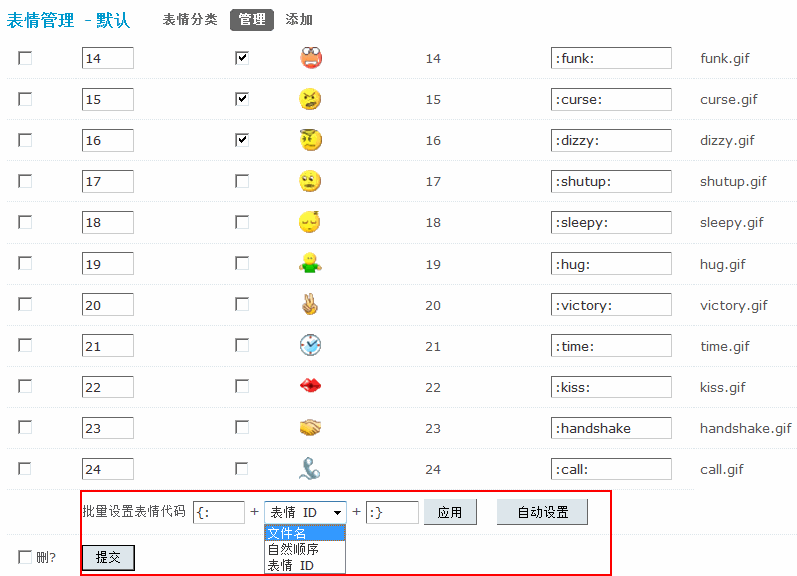

表情管理
在论坛交流中，表情可以帮助用户更加生动形象地表达自己的情绪、喜好等。 Discuz! X3 中内置了 3 套表情，站长可以在后台启用或关闭某套表情。还可以对表情执行导出、导入、添加、删除等操作。
操作路径：【后台】=>【界面】=>【表情管理】
一、导出导入表情
在每套表情后的操作选项中，点击“导出”链接即可导出该套表情为xml后缀文件。
如果想导入从另外的 Discuz! 论坛后台导出的表情，请点击上方的“导入表情”：
表情的导入方式，可以选择直接上传要导入的文件，或者打开文件粘贴文本，效果是一样的。 表情文件导入后，您还需要上传表情图片文件到相应的表情目录（static/image/smiley/表情目录/）下，该套导入的表情才可以正常使用。
二、添加表情
如果您有一套表情图片，可以直接自行添加表情。 首先，上传该套表情图片到论坛根目录的 static/image/smiley/ 下：
上传成功后，在表情管理处，会看到新表情分类的出现，这时为设置好表情分类名，提交并启用后，就已成功添加表情，会员在前台发帖时即可使用。
注意：如果不是导入的表情而是直接手动添加的表情，必须设置正确的表情代码才可以正常使用，并且表情图片文件名只允许数字、26 个英文字母、下划线、半角空格及 <>-.&[]() 等符号，文件名长度不能超过 30 字节，否则将会无法识别。
